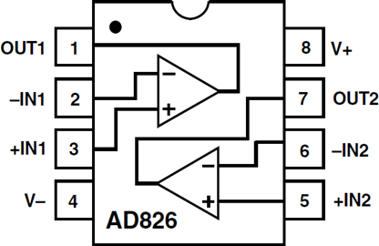

Недорогой, быстродействующий, малопотребляющий двухканальный операционный усилитель

- Высокое быстродействие:
- Ширина полосы при единичном усилении: 50 МГц
- Скорость нарастания: 350 В/мкс
- Время установления до 0.01%: 70 нс
- Простота применения:
- Работает на неограниченно большую емкостную нагрузку
- Минимальный выходной ток 50 мА/канал
- Полный набор спецификаций при работе от +5 В, ±5 В и ±15 В
- Размах выходного напряжения 2.0 В на нагрузке 150 Ом (Vs = +5 В)
- Низкое энергопотребление:
- Максимальный потребляемый ток 7.5 мА/канал
- Хорошие характеристики передачи видеосигнала
- Погрешности дифференциального коэффициента усиления и фазы 0.07% и 0.11°
- Превосходные статические характеристики:
- Входное напряжение смещения 2.0 мВ, макс.